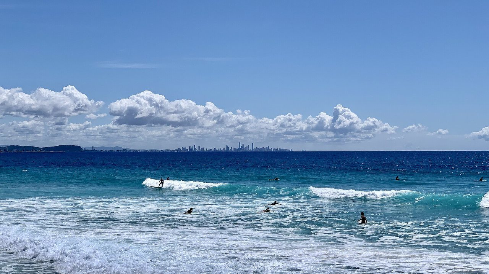

Race, Surfers Paradise

Behind
Best +0:01
371W
Target 418 W-47 W
- Cadence
- 87rpm
- Heart
- 140bpm
- Speed
- 26.5km/h
Work9 of 24
0:10
Next: · 2:00 at level 19
+0.3%
2 m climbed
4.42 km
24
Resistance / 32
Solo races your best-time ghost: position reads Ahead or Behind, and solo alone gets a Pause button. Frozen at 10:50.